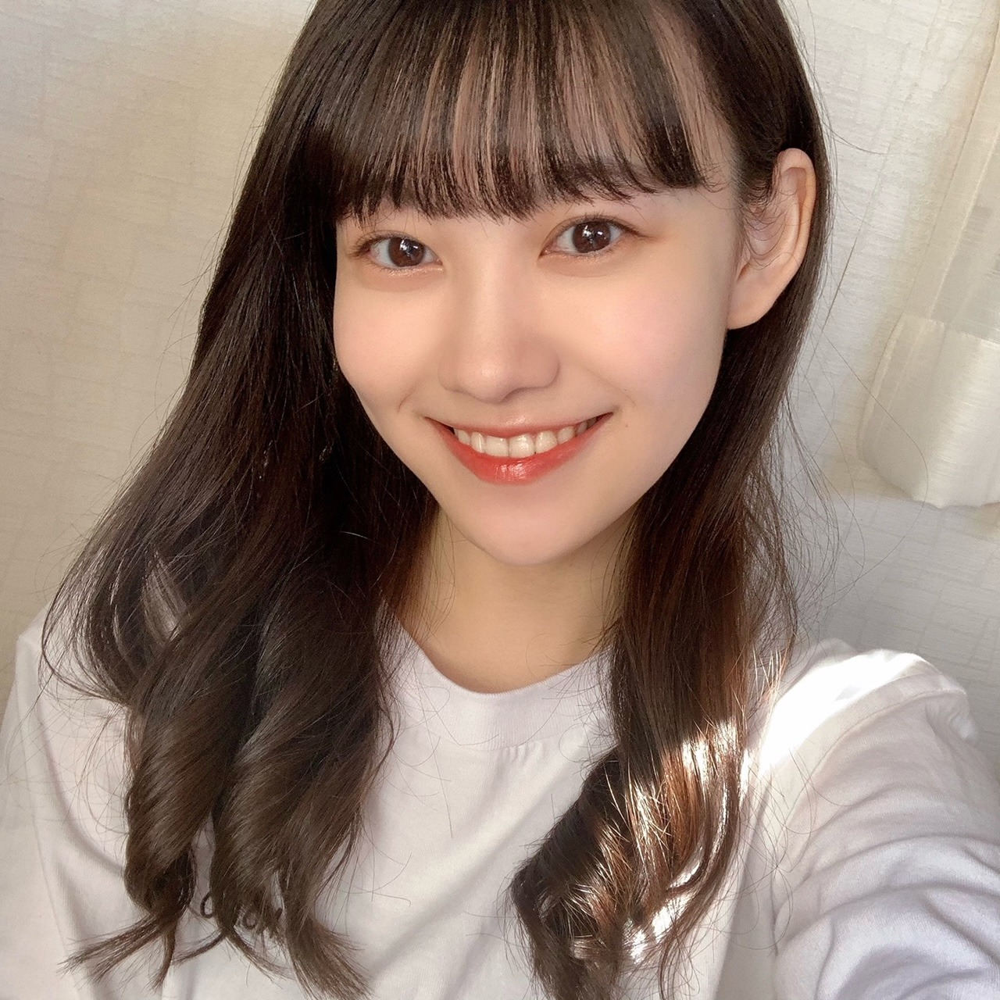
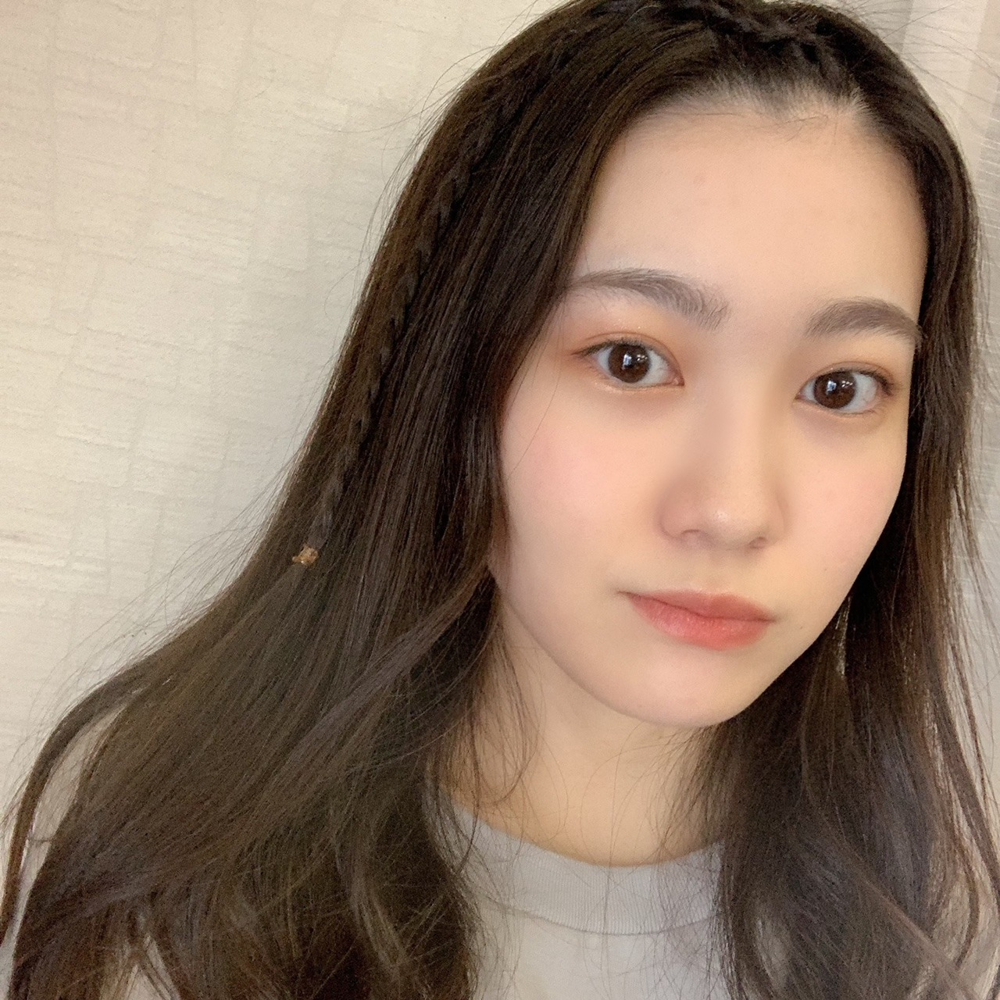

2020/1121Sat幸せ色 松尾美佑
なんだか春みたいな天気ですね。
あったかくて、
風が強い。
不意に飛ばされないように気をつけましょう
( ఠ͜ఠ )
高校2年生
16歳
最近前髪が長かったので昨日の夜、何も考えないでタッタカ前髪切りました。
松尾美佑です。
ちょっと切り過ぎた所があったりなかったり。
まぁ、伸びるから。
大丈夫さ。
٩( ᐖ )۶
へへっ
前髪じゃなくて全体な髪の毛も割と伸びたなぁと最近思うことが多くて、
ちょこっと切りたいなぁって思ったりしていたりしていなかったり。

髪の毛まきまきした直後に撮ったのであんまり可愛いまきまきではないですね。
もーちょっと髪の毛同士が離れると良い感じですね
あ、お姉ちゃんの髪の毛まきまき借りました
私のは引き続き壊れ中です。
そして割れてしまった携帯画面なのですが、
内カメの所のヒビが写真に写らないかドキドキしていたのですが
頑張れば大丈夫そうです！
手がやや小さめ人間なので次の携帯は落とさないように小さめサイズがいいなと思い中です。
ちょっと最近の話をもうちょこっとしますね
前回寝坊したーって書いたら快適に起きれるアプリをコメントでオススメして下さって
ありがとうございました！
入れたんですよ、
そしたら何時間しっかり寝てたかとか、
眠りが浅い時に起こしてくれたり、
すっごく優しいんです。
お陰様で最近楽しく早起きできてます！
11月20日！
さやかちゃん！お誕生日おめでとう！
掛橋ちゃんって名前が綺麗で好きで何となく掛橋ちゃんって読んでたりしたけど最近はさやかちゃんって呼びたい気分です(๑ت๑)
前髪も髪の毛も切ったの本っ当に似合ってて可愛い！
素敵な1年になりますように⸜❤︎⸝
お返事〜
✽ みゆちゃんが旅行にもしも行くとしたらどこにいってみたいですか。
国内だったら青森、沖縄、京都に行きたいです！
海外だったら綺麗な海がある場所とか、イタリアにも行ってみたいなって前から思ってたり、スウェーデンにも行ってみたかったり、
沢山過ぎて上げたらキリがないです！
✽ さっきまで何してましたか？
大学芋食べてました。
ちなみに今は干し芋食べてます。
✽ 人生最後のご飯を食べるなら
焼肉？お寿司？
お鍋。辛いの。
二択を無視しました。
✽ 俺も天気と仲良しなんだけど、太陽の名前って陽子さんだよね？
ごめん、太子さんなんだ...。
読み方は、たいこさん。
✽ 前髪のヘアアレンジを教えてください！

根元から編み込みして途中から三つ編み！
またなにかしたら報告しますね( ¨̮ )
✽ ミュウちゃんが本当にジェットコースター乗ったらどんなリアクションになるの？
（泣く？ 叫ぶ？ 笑う？ 黙る？）
笑うか黙ります٩( ᐖ )۶( •̅_•̅ )
明日は〜
なお〜〜〜〜〜〜〜〜〜〜
先日ぱるとまりぃちゃんに会えて嬉しかったね！！！！⸜❤︎⸝⸜❤︎⸝⸜❤︎⸝
また5日後！
ミュウでした¨̮

ばいっっっっっっっ( Ꙭ )/''
コメント(212)
暑かったり寒かったり、はっきりしてほしいよね笑
気温の変化で体調崩さんようにしないと。
ミュウちゃんも気をつけてね！
カメラセーフやったか！！
不幸中の幸いかな？
でも割れてるの変えないとね。
最近のスマホサイズ大きすぎる笑
俺もよく落としそうなります。
また変えたら教えてねー！
今日から乃木フェス3周年イベ！
新4期生もついにイベントメンバーに入ったから、早速ミュウちゃんを選んでイベント頑張ってます！
乃木フェス初のサイン入りグッズゲットできるように頑張る！！
ミュウちゃんも応援してて？笑
ではでは体調には気をつけて。
次のブログも待ってます。
いつもありがとう。
前髪は自分で切ったか？気をつけてね(｡>﹏<｡)
ミュウはノギザカスキッツでいつもストレートのイメージあるけど、
やっぱり巻き髪も多いかな？
いや、次の携帯ストラップとか、手から落ちても床まで落ちない、なんとか付けた方が良いじゃない？
今後、ミュウとさやかちゃんの猫舌SHOWROOMを見たいよ＼(^o^)／♪
あれ？ミュウは辛いもの得意なの？
あっ、編み込み可愛い
あとやっぱりデコ出し可愛いよ(｡>﹏<｡)♡
4期生全員ジェットコースターやお化け屋敷の企画やってほしいなあ(｡>﹏<｡)
（以前は4期生3人しか参加してなかった）
「ぱる」と「まりぃ」は誰だったっけ？
これからも頑張って(/･ω･)/
あっ、最後の写真可愛いお耳が見えてるよ(*´ω｀*)
ブログ更新ありがとう！
最近暑くなったり寒くなったり、
おてんとさんも機嫌がコロコロ変わって、
人間サイドも大変な季節だけど、体調崩したりしてない？
大丈夫？
体調第一やから気をつけてね！！
スマホのカメラの件、良かったね。
新しいのに変えるとか、修理するとかなると高くなるもんねぇ。
無事でよかった。。
♬♬♬♬
質問していい？
Q、みゅうちゃんが一日の中で1番安心出来る時間っていつですか？
Q、お肌のケアってどんな風にしてますか？
答えてくれると嬉しいな！
大好き
ひろと
待ってたよー！
blog待ってた！
埼玉の陽一です。
みゆちゃんて面白いよね(^-^)
またラジオとか出ていっぱいしゃべってほしいです。ぜひ
ヘアアレンジいつも楽しみにしてます。
巻き髪とポニーテールが特に好きです(^-^)
みゆちゃんの口角めっちゃ好き
お互い体調気をつけようね～～
ばいっっっっっっっ( Ꙭ )/''
俺も数日前に何も考えず髪を切りました…ちょっとミスりました笑笑
毎日勉強続きでしんどい時にみゆちゃんのブログ読んで
癒されとります(*´ω`*)
高校とかの勉強なら無理矢理詰め込めば何とかなったのにな〜笑
質問！！
みゆちゃんが勉強する時どうやって集中してる？
もしくは集中切れた時どうしてる？
またねーヾ(｡･∀･｡)
┌(`Д´)ノ)ﾟ∀ﾟ)
今日のタイトルは誰が？←なんでそれが気になる。もぅ、ええわ。
札幌は最近は雨の日が多いです。
青森、沖縄なら修学旅行であります。
大学いもって、本当にどこかの大学発祥だったような？……東大か、早稲田か、……
ジェットコースター、ＶＲみたいのはあるんですけど、実際どうなるかわからない。。
驚きです。
基本的に眠りが浅い私はすぐ起こされちゃうんですかね？
(^-^;)ソレハコマリマスネ
やっほーーーー！！（言いたくなったから書いてみた笑！）
今回も可愛いお写真ありがとう♡ タッタカの擬音語に可愛くて笑っちゃった笑！
やっぱり巻き髪似合う！！！光の当たり方で髪が茶色っぽくなってるのも可愛い(*´꒳`*)
☆美佑ちゃんは夜遅くまで起きてられる人？？
☆乃木坂スキッツのスマイルガールズの感想聞きたいですっ
☆スタイルがとってもいい美佑ちゃんだけど、意識していることはありますか？
携帯もヘアアイロンも早くなおりますように(*´ー｀*)！
また5日後に笑顔で会おうね〜☺︎
またねっっっ( Ꙭ )/''
美佑ちゃんの使う顔文字が使って見たいと思う今日この頃ですがアプリかなにかあるんですか？(笑)
編み込みからの三つ編みした前髪とてもキュートですね、やっぱ自分はおデコ出しが凄く好みなんだなって思いました！何年後とかでもいいんだけどショートカットにする予定とかは立ててたりしますか？少し見てみたいなぁって思ってます！でも女の子は髪の毛大事だからそう簡単には切れないよね(笑)今のままでもすっごく似合ってるので大丈夫だよ！
だいちゃりも旅行行きたいなぁ、沖縄とか京都とかも行きたいんだけど国内だったら今は岩手県の"銀山温泉"にいきたいなぁ。街の風景がとても綺麗で、雪とか降ってるとすっごく幻想的なところです。
海外イタリアとかスウェーデン行きたいの凄く共感できます！イタリアは世界遺産とか美術館とか巡ってみたいしスウェーデンはオーロラ見たい！たしかに行きたいって思い始めたらどこへだって行きたいからキリないね(笑)
では今回はこの辺で、風邪とか引きやすい季節だから体調には気をつけてね？またコメントしまあす、ばいばいっ！
ー質問ー
・冬の防寒は最大でどのくらいまでする？
・呼ばれたいあだ名ってあるかな？
・写真集を発売するならどこで撮影したい？
ありがとう！次回も楽しみにしているよ。
前髪あげるとずいぶん大人っぽくなるね〜^_^
体調には気をつけてお仕事頑張ってくださいね（＾ω＾）
みゆちゃん今日も可愛いです。
みゆちゃん今日も１日お疲れ様です。
今日はお仕事でした。
今日は凄く忙しくて大変でした。
明日はお仕事です。
これからもお仕事頑張って下さい。
自分もお仕事頑張ります。
これからのブログを楽しみにしてます。
今日暖かいねぇ太陽の光が気持ちよくていい日(*^^*)
だけど寒暖差が激しかったりするから体調に気をつけてね
前髪も巻き巻きもいい感じだよぉ
三つ編みも可愛い!みゆちゃんの色んな髪型見たいなぁ
質問
今日は気持ちが落ち込んじゃうなぁって日どう過ごしてますか？
次回のブログも楽しみにしてます！またねっ( Ꙭ )/''
アシスタントやらないのかな？
中身はわかってる上で、どんな感じに
話す子なのか気になる木
昨日から胃腸風邪になっちゃって布団の中にしかいれないからみゆうちゃんのブログ更新がほんとに楽しみだったの！！
前髪切りすぎちゃったみゆうちゃんも絶対可愛いんだろうなーって思いながら読んでました笑
次のブログで見れるの楽しみにしてます！！
質問なんですけど！！
みゆうちゃんが乃木坂46で1番好きな歌を教えてください！！
僕は｢ひと夏の長さより｣なんですけど、みゆうちゃんがどの歌が好きなのか気になったのでもし良かったら教えてください！！
改めてブログ更新ありがとうね！！
また次回も楽しみにしてます(*´ω｀*)
昼間あったかかったけど、夜になったら急に寒くなったね～
明日からまた寒いらしいよ！
前髪、いい感じ！
おでこ出しもとってもかわいい！
ぱるよ＆まりぃちゃんに会ったんだ！
どんな話したのかな？？
櫻坂、日向坂の同期と最近したやり取りとかあったらよかったら教えてください！
またね～
１１月も２０日を過ぎ、残すところは「怒涛の年末年始の音楽番組」と「年末の締めくくりでもある、紅白歌合戦」だねぇ～(●´ω｀●)
そして、昨日は「同期でもあり、ちょっとだけ年上なさぁちゃん」の誕生日だったけど、乃木メンは「先輩・後輩」関係なしで「全員優しいから」誰とでも仲良くなれちゃうような気がする( *´艸｀)♪
そんな乃木メン達を「これからも大切に」していってね☆彡
携帯で思い出したけど、僕もついつい最近は暖かい日が続いてるから、昼間でも眠くなって「携帯を持ったまま」仰向けに寝落ちしちゃって、携帯を「眉間にゴツ～ン(>_<)」っていうのを度々しちゃってるよ。
（何気に、眉間って「筋肉」じゃなくて「骨」に、もろにあたるから、何とも言えない痛さが残るんだよねぇ～(笑)( *´艸｀)）
そして、あまりの痛さに「アウチッ！(>o<)」って英語っぽく言ってしまう僕がいる(笑)( *´艸｀)
４期ちゃん達１６人も、いろんな事を経験して顔つきも変わってきて、優しくなっていくメンツが多くなっていると僕の中では思っているから、引き続き吸収できるものは沢山吸収して、楽しく乃木活を楽しんでね☆彡
ミュウ(>o<)ちゃん達４期ちゃんの未来は「これから」なんだからぁ～ヽ(^o^)丿♪
沢山の「初めまして」と「自分の個性」を出していけば、思いもしない「松尾美佑ちゃん宛てに乃木活というクリスマスプレゼントを持ってきましたぁ～(=ﾟωﾟ)ﾉ」っていう事になるかもしれないからね♪
それじゃあ、次のブログもめっちゃ楽しみにしてるねぇ～♪また５日後に会おうね☆彡
明日も一日！一緒にお家時間を楽しもうね♪大好きだよ♪ミュウ(>o<)ちゃん☆彡
最近、気温の変化が凄いですね
暑かったり寒かったり…
風邪には気をつけてくださいね！
ファイティン
ミュウちゃんが見られる機会が増えるのは良いことです
季節感に戸惑いますね～
前髪とっても似合ってますよ！
まきまきもナチュラル感です✨
小さいスマホは使い易いですよ！
快適な起床のアプリ素敵ですね♪
大学芋とても美味しいですよね！
逆に辛いお鍋も得意なのですね☆
前髪アリだとアイドルっぽいし、
前髪流すと女優さんみたいです✌
ミュウちゃんは大人っぽいです～☺
別のグループに配属していても、繋がりがあるのすごく嬉しいです〜
最近暑かったり寒かったりで大変だよね(^^;;
十分可愛いまきまきです。とても可愛いです。
掛橋ちゃん誕生日おめでとうだね！！
素敵な1年になりますように。
質問です(*^^*)
自分は暖かい風や空気が苦手なため、冬場でもヒーターや暖房を一切使わないのですが、美佑ちゃんはどのくらい使いますか？
5日後のブログ更新も楽しみに待ってる(^^)
体調に気をつけてお仕事頑張ってね！！
素敵なヘアアレンジですね、最高です！
ちなみに松村沙友理さんと唯一同い年になれる13歳だったのに14歳になってしまいました...
でも美佑ちゃんパワーで頑張れそうです！
美佑ちゃんの活躍も拝見しています。
ナース姿似合ってますよ
ｶﾜ(・∀・)ｲｲ!!
福袋色々と迷っています。
１期生、まっちゅん、２期生みおな、３期生ももこ、４期生さくら
新４期生ミュウ 推しはこうきの中ではこの５人ですが全部買いたい
８,０００×５=４０,０００は厳しい
だから今年は、松尾美佑大好き
美佑ちゃん頑張ってね(^。^)y-.。o○
さつまいも、美味しいね！
前髪切ったんだね。良い感じだと思うよ〜
チャレンジしてみたい髪型とかありますか？
前髪を自分でカットして気に入ったという話はあまり聞かないですが、本人が気にしていないなら問題なし。
巻き具合がナチュラルに仕上がるとミュウちゃんの理想に近づきそう。
携帯写真は一先ず安心という事で何より。手にフィットサイズの機種にしたなら一層大事に扱えるかな。
快適な目覚めが日々の充実に繋がります様に。
編み込みから三つ編みへの遊びがアクセントが効いて新鮮です♪
質問させてもらいます。
・寿司で一番好きなネタは？
・カラオケでよく歌う曲ある？
・連絡してみたい先輩とかいる？
・冬に食べたくなる食べ物は？
やや小さめなんですね？
俺も､やや小さめの方よりは
やや大きめなのですが携帯を
やや落とすので､やや小さめ
サイズがいいなと､やや思い中です。
ややうっとうしくて､すみません。
ﾀﾞｲﾌﾞｯ(oﾟ∀ﾟ)=○
5日ぶりのこんばんは
最近気温が暖かく過ごし易い陽気だね。
でもここ2日間位風が強くてひょろ長な
お松は飛ばされそうになるのか〜
気お付けてね。
しかし何時も添付してくれる画像のお松は
本当に大人っぽくて素敵だけど声は
可愛らしくてそのギャップがまた良い。
スキッツACT2第3話でスマイルガールズが
見れるのが楽しみだね。
そして4期生Live迄2週間となりました
気温も日に日に変わるので体調管理も注意して
頑張って下さい
楽しみにしてます。
頑張れ！ ミュウ
『 When Miu smiles, it chains to us. 』
今日は風が強かったですね、自分坊主なので冬は帽子を被っているんですけど、飛ばされそうでした、ニット帽だと今日は暑いんですよね！難しいです。
森本さんのブログに写真あったね、奈於ちゃん、陽世ちゃんも居たみたいで、良かったですですね！久しぶりだそうですね、チョイチョイ軽く立ち話くらい出来ると良いですね。
美佑ちゃんは写真が大人っぽく見える事があるのですが、年上に見られた事とかありませんか？まぁ幼く見える美佑ちゃんもどちらも良いです。髪を編み込むのって時間がかかりそうで大変だなって思います。上手く決まったら是非見せてくださいね。
ジェットコースター平気なんですか！自分は絶叫系はからっきしですね！三半規管が弱いんだと思います。デートとかで女の子に見栄を張る様な事もなかったので多分ですけど、堪えちゃうと思います。
おやすみ
お返事ありがとう！
みゆ！
やっほー！
ひろき(Yandji)です☺️
ブログ更新ありがとー！！！
質問タイムー！！！
コンビニで必ず買っちゃうものとかある？
また、コメントするね！
では、またねー！
ひろき(Yandji)より
ブログ更新ありがとー！
質問
今まででいちばん短かった時の髪の長さは？
コメントする

PROFILE
新4期生リレー
202104
| SUN | MON | TUE | WED | THU | FRI | SAT |
|---|---|---|---|---|---|---|
| 1 | 2 | 3 | ||||
| 4 | 5 | 6 | 7 | 8 | 9 | 10 |
| 11 | 12 | 13 | 14 | 15 | 16 | 17 |
| 18 | 19 | 20 | 21 | 22 | 23 | 24 |
| 25 | 26 | 27 | 28 | 29 | 30 | |

最近あったかいな！おじさんはチャリンコ乗るからありがたい限りよ！
髪巻き巻きして可愛すぎるぞ！！似合いすぎるぞ！！
何の髪型しても尊いなお主！！
最近さめちゃくちゃ僕の思い込み聞いてね、いっぱい話たいことがある。スマホだけじゃ伝えきれない。ちゃんと目を見て話したいって歌詞にね。ホンマにその通りすぎるなって痛感したんだ。まだしばらく会えなそうやけどやれることはあるから伝えんと！美佑ちゃんの励みにならば嬉しい！
今日はこの辺で！またブログ更新楽しみにしてるばい！
栃木より愛を込めて。